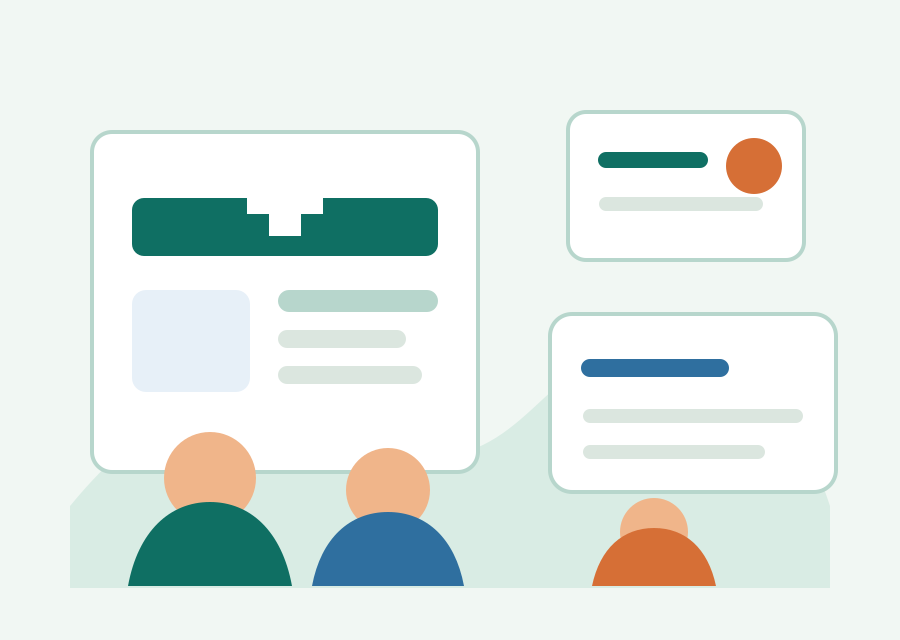

社区健康科普 · 面向全年龄段
把慢病用药、儿童健康和基层就医讲清楚
面向津南居民和外来务工家庭，整理中老年慢病、青少年成长、家庭共育、基层就医和安全用药等科普内容。
不采集、不存储居民个人信息
AI仅作科普指引，不替代医生诊断
线下义诊服从社区和卫生院安排

AI科普助手
四类常见问题入口
这些入口目前使用占位链接，后续把真实平台地址替换到 #AI_PLATFORM_URL# 即可。
安全与边界
科普网站必须说清楚的事
个人信息
平台不采集、存储任何居民个人信息；网站覆盖中青年、青少年和中老年全人群科普。
线下活动
线下科普义诊优先安排早晚乘凉时段避开高温，活动时间服从当地政府统一调度。
影像素材
实拍照片、视频仅用于校内学术实践展示，拍摄前必须征得当事人许可。